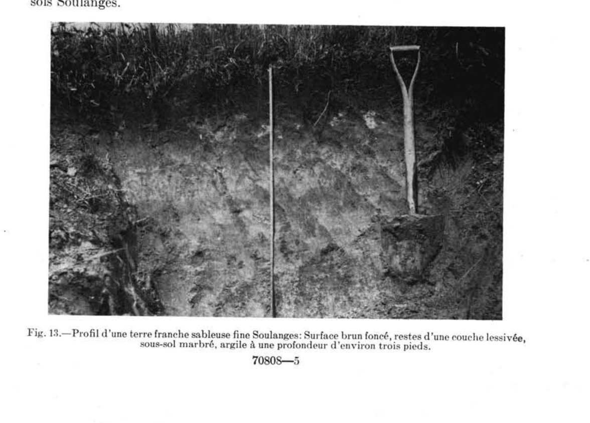

Identification & Caractéristiques Générales
Les sols de la série de Soulanges se sont développés sur un matériau parental meuble à stratification bi-séquentielle, caractérisé par un dépôt loameux-grossier (alluvions ou sédiments sablo-limoneux) d'une épaisseur variant généralement de 60 à 80 cm, reposant en discontinuité lithologique sur un substratum d'argile marine ou lacustre lourde. Ces dépôts quaternaires occupent des positions topographiques de basses terres caractérisées par des paysages unis ou de faibles pentes oscillant entre 1 et 5 %. La morphologie de surface montre une topographie plane ou presque plane, localement sujette à des submensions ou des engorgements lors des crues printanières.
Le profil pédologique, d'une profondeur totale (solum) de 60 à 80 cm, présente un drainage naturel qualifié de mal à imparfait. L'horizon de surface (Ap), d'une épaisseur de quelques décimètres, montre une texture de loam, de loam sableux fin ou de loam limono-argileux, dont la réaction varie de fortement à faiblement acide. Ce dernier surmonte un horizon sous-jacent (Bmgj ou Bg) à texture de loam sableux fin ou de sable fin loameux présentant des empreintes de gleyification et des teintes de réduction, témoignant d'une nappe phréatique temporaire perchée au-dessus du contact lithologique imperméable. Le substratum (IICg), atteint entre 60 et 80 cm de profondeur, est constitué d'une argile lourde ou limoneuse massive à réaction neutre à faiblement acide, agissant comme un aquitard limitant la percolation verticale des eaux. Le contenu en fragments grossiers demeure faible, oscillant entre 0 et 10 % dans le solum et nul dans le substratum argileux.
Sur le plan agronomique, ces sols sont principalement voués à la grande culture et aux productions fourragères, bien que la portabilité printanière y soit réduite en raison d'un réchauffement tardif et d'une ressuyabilité lente. Les limitations inhérentes à la série relèvent principalement de l'hydromorphie temporaire et d'une aération déficiente de l'horizon de subsurface, ce qui restreint l'implantation pérenne de certaines légumineuses exigeantes comme la luzerne, bien que les graminées et le trèfle y croissent convenablement. La mise en valeur agricole requiert impérativement l'installation d'un réseau de drainage souterrain et l'utilisation de méthodes culturales adaptées, telles que le labour en planches bombées, afin d'optimiser l'espace racinaire. La fertilité naturelle, jugée passable, nécessite des apports réguliers d'amendements calciques pour corriger l'acidité de surface ainsi qu'une fertilisation minérale et organique balancée pour soutenir les rendements.
Caractères Distinctifs & Morphologie Génétique (Comté de Verchères — Page 181)
- Modérée : agrégats bien formés et possédant des caractères distinctifs, moyennement durables et évidents.
- Forte : agrégats durables qui adhèrent faiblement les uns aux autres résistant au déplacement et se séparant lorsque le sol est perturbé.
- Massive ou amorphe : masse cohérente sans orientation distincte de lignes naturelles de faiblesse.
Classification Taxonomique & Environnement Pédologique
| Ordre Pédologique | Gleysolique |
|---|---|
| Grand Groupe (SCSS) | Gleysol humique |
| Sous-Groupe Taxonomique | Gleysol humique orthique |
| Famille Pédologique | Loameuse-grossière, mixte sableux, neutre |
| Mode de Dépôt Parental | Fluviatile sur marin |
| Classe de Drainage Naturel | Imparfaitement drainé |
| Régime Thermique & Humidité | Doux / Humide |
Description Morphologique du Profil Type
Séquences génétiques des horizons pédologiques caractérisant le profil type représentatif de la série Soulanges :
Profil cultivé (agricole) — Comté de Chambly
✓ Source : Comté de Chambly — Page 136Couleur Munsell : 10YR 3/1
Structure & Consistance : Granulaire
Description morphologique : Loam sableux fin humifère; gris très foncé à brun grisâtre très foncé (10YR 3/1,5); structure granulaire, fine, faiblement développée; consistance très friable; modérément poreux; racines peu abondantes, fines, non orientées; limite abrupte, ondulée; réaction faiblement acide.
Couleur Munsell : 10YR 5/3 (matrice), 10YR 4/6 (marbrures)
Structure & Consistance : Polyédrique à granulaire
Description morphologique : Loam sableux fin; brun (10YR 5/3); marbrures brun jaunâtre foncé (10YR 4/6), nombreuses, grossières, distinctes; particulaire; consistance meuble; modérément poreux; limite nette, ondulée; réaction faiblement acide.
Couleur Munsell : 10YR 3/3 (matrice), 10YR 4/6 (marbrures)
Structure & Consistance : Lamellaire
Description morphologique : Loam sableux fin; brun foncé (10YR 3/3); marbrures brun jaunâtre foncé (10YR 4/6), nombreuses, grossières, distinctes; structure lamellaire, fine, faiblement développée; consistance meuble; modérément poreux; fragments grossiers constitués de graviers fins et moyens, limite nette, régulière; réaction faiblement acide.
Couleur Munsell : 5Y 4/2 (matrice), 10YR 4/4 (marbrures)
Structure & Consistance : Polyédrique à granulaire
Description morphologique : Loam sableux; brun grisâtre foncé (2,5Y 4/2); marbrures brun jaunâtre foncé (10YR 4/4), nombreuses, grossières, marquées; massif; consistance friable; modérément poreux; fragments grossiers constitués de graviers fins et moyens; limite nette, régulière; réaction neutre.
Profil représentatif — Comté de Argenteuil
✓ Source : Comté de Argenteuil — Page 78Couleur Munsell : Non précisée
Structure & Consistance : Granuleuse faible
Description morphologique : Terre franche sableuse très fine, brune; structure granuleuse faible; très friable; pH 5.2-5.8.
Couleur Munsell : Non précisée
Structure & Consistance : Polyédrique à granulaire
Description morphologique : Terre franche sableuse très fine, brun jaunâtre foncé; marbrures modérées de brun jaunâtre et de gris brunâtre; poches de terre franche limoneuse et de sable fin; pH 5.8-6.2.
Couleur Munsell : Non précisée
Structure & Consistance : Polyédrique à granulaire
Description morphologique : Terre franche sableuse fine, brun jaunâtre; tachetures de gris jaunâtre clair et de brun rouille; friable; pH 6.0-6.4.
Couleur Munsell : Non précisée
Structure & Consistance : Polyédrique à granulaire
Description morphologique : Terre franche argilo-sableuse, brun grisâtre à brune; pH 6.2-6.6. Argile marine lourde.
Profil cultivé (agricole) — Comté de Gatineau — Phase la plus
✓ Source : Comté de Gatineau — Page 79Couleur Munsell : 2.5Y 3/2
Structure & Consistance : Granuleuse
Description morphologique : Loam sableux fin à très fin, brun grisâtre très foncé (2.5Y 3/2); fine structure granuleuse; très friable; très perméable; pH 5.2 à 5.9.
Couleur Munsell : 2.5Y 5/2 (matrice), 10YR 4/3 (marbrures)
Structure & Consistance : Polyédrique à granulaire
Description morphologique : Loam à loam sableux fin, brun grisâtre (2.5Y 5/2); larges marbrures brun jaunâtre foncé, (10YR 4/3); pH 5.8 à 6.2.
Couleur Munsell : 10YR 5/3
Structure & Consistance : Polyédrique à granulaire
Description morphologique : Loam sableux brun à brun jaunâtre (10YR 5/3-5/4); moyennes marbrures brun-vif et grises; mal aéré; pH 6.0 à 6.4.
Couleur Munsell : 10YR 6/2 (matrice), 2.5Y 5/2 (marbrures)
Structure & Consistance : Polyédrique à granulaire
Description morphologique : Argile gris à gris brunâtre (10YR 6/2-2.5Y 5/2); fines marbrures rouge jaunâtre ou jaune rougeâtre (5.YR 5/6-7.5YR 6/6); très peu perméable; pH 6.5 à 7.0.
Profil cultivé (agricole) — Comté de Hull — Phase la plus
✓ Source : Comté de Hull — Page 85Couleur Munsell : 2.5Y 3/2
Structure & Consistance : Granuleuse
Description morphologique : Loam sableux fin à très fin, brun grisâtre très foncé (2.5Y 3/2); fine structure granuleuse; très friable; très perméable; pH 5.2 à 5.9.
Couleur Munsell : 2.5Y 5/2 (matrice), 10YR 4/3 (marbrures)
Structure & Consistance : Polyédrique à granulaire
Description morphologique : Loam à loam sableux fin, brun grisâtre (2.5Y 5/2); larges marbrures brun jaunâtre foncé, (10YR 4/3); pH 5.8 à 6.2.
Couleur Munsell : 10YR 5/3
Structure & Consistance : Polyédrique à granulaire
Description morphologique : Loam sableux brun à brun jaunâtre (10YR 5/3-5/4); moyennes marbrures brun-vif et grises; mal aéré; pH 6.0 à 6.4.
Couleur Munsell : 10YR 6/2 (matrice), 2.5Y 5/2 (marbrures)
Structure & Consistance : Polyédrique à granulaire
Description morphologique : Argile grise à gris brunâtre (10YR 6/2-2.5Y 5/2); fines marbrures rouge jaunâtre ou jaune rougeâtre (5.YR 5/6-7.5YR 6/6); très peu perméable; pH 6.5 à 7.0.
Profil cultivé (agricole) — Comté de L'assomption
✓ Source : Comté de L'assomption — Page 67Couleur Munsell : 2.5Y 3/2, 10YR 4/2
Structure & Consistance : Granuleuse fine
Description morphologique : Loam brun grisâtre foncé à très foncé (2.5Y 3/2-4/2, 10YR 4/2); structure granuleuse fine; très friable et très perméable; pH 5.4 à 6.4.
Couleur Munsell : 2.5Y 5/2 (matrice), 10YR 4/4 (marbrures)
Structure & Consistance : Polyédrique à granulaire
Description morphologique : Loam brun grisâtre (2.5Y 5/2) avec grosses mouchetures de brun jaunâtre (10YR 4/4); friable et perméable; pH 6.0 à 6.8.
Couleur Munsell : 10YR 5/4
Structure & Consistance : Polyédrique à granulaire
Description morphologique : Loam brun olive à brun jaunâtre avec mouchetures de brun vif et brun grisâtre (2.5Y-10YR 5/4); mal aéré; pH 6.2 à 7.0.
Couleur Munsell : 2.5Y 5/3
Structure & Consistance : Polyédrique à granulaire
Description morphologique : Loam brun olive à brun grisâtre avec fines mouchetures de brun jaunâtre (2.5Y 5/3-5/2); pH 6.5 à 7.3.
Couleur Munsell : Non précisée
Structure & Consistance : Polyédrique à granulaire
Description morphologique : Argile grise, massive et peu perméable.
Profil cultivé (agricole) — Sols de l'île de Montréal
✓ Source : Sols de l'île de Montréal — Page 51Couleur Munsell : Non précisée
Structure & Consistance : Granulaire ou nuciforme faiblement définie
Description morphologique : Terre franche sableuse brune très fine (7.5yr4/2); structure granulaire ou nuciforme faiblement définie; très friable; pH 5.2.
Couleur Munsell : Non précisée
Structure & Consistance : Lamellaire
Description morphologique : Terre franche sableuse très fine brun jaunâtre foncé (2.5y4/4) avec poches de terre franche limoneuse et de sable fin brun jaunâtre clair; marbrures grossières à contraste moyen de brun jaunâtre (10yr5/6) et de brun grisâtre ou de gris brunâtre clair (2.5y5/2-6/2); structure lamellaire; pH 6.0.
Couleur Munsell : Non précisée
Structure & Consistance : Nuciforme
Description morphologique : Terre franche sableuse fine brun jaunâtre (10yr5/4) à marbrures grossières et moyennement contrastantes de gris brunâtre clair (2.5y6/2) avec quelques stries de brun (7.5yr5/4); structure nuciforme; friable; pH 6.3.
Couleur Munsell : Non précisée
Structure & Consistance : Nuciforme ou fragmentaire faiblement définie
Description morphologique : Terre franche sableuse brune (10yr5/3) marbrée de gris clair (5y6/2-6/1); structure nuciforme ou fragmentaire faiblement définie; assez ferme; pH 6.3.
Profil représentatif — Comté de Soulanges
✓ Source : Comté de Soulanges — Page 44Couleur Munsell : Non précisée
Structure & Consistance : En miettes
Description morphologique : Terre franche sableuse fine à très fine, brun très foncé à gris-brun foncé, structure en miettes, très friable, pH 4.7.-5.7.
Couleur Munsell : Non précisée
Structure & Consistance : Polyédrique à granulaire
Description morphologique : Terre franche sableuse fine à terre franche, lessivée, de couleur gris pâle à gris brun.
Couleur Munsell : Non précisée
Structure & Consistance : Lamellaire parfois discernable
Description morphologique : Terre franche sableuse fine brun jaunâtre marbrée de gris et de brun rouille, très friable, pH 5.0-6.0, structure lamellaire parfois discernable.
Couleur Munsell : Non précisée
Structure & Consistance : Lamellaire mince
Description morphologique : Terre franche sableuse légère fine à très fine, brun jaunâtre pâle, marbrée de gris et de brun rouille, fragments de mica, structure lamellaire mince, pH 5.5-6.5.
Couleur Munsell : Non précisée
Structure & Consistance : Lamellaire
Description morphologique : Sable gris bleuâtre, structure lamellaire, friable, pH 6.2-7.0.
Couleur Munsell : Non précisée
Structure & Consistance : Polyédrique à granulaire
Description morphologique : Argile ou argile limoneuse.
Profil forestier / boisé — Comté de Verchères
✓ Source : Comté de Verchères — Page 80Couleur Munsell : Non précisée
Structure & Consistance : Polyédrique à granulaire
Description morphologique : Couche de surface
Couleur Munsell : Non précisée
Structure & Consistance : Polyédrique à granulaire
Description morphologique : pH-eau
Couleur Munsell : Non précisée
Structure & Consistance : Polyédrique à granulaire
Description morphologique : CEC (cmol/kg)
Couleur Munsell : Non précisée
Structure & Consistance : Polyédrique à granulaire
Description morphologique : C organique (%)
Couleur Munsell : Non précisée
Structure & Consistance : Polyédrique à granulaire
Description morphologique : Argile (%)
Couleur Munsell : Non précisée
Structure & Consistance : Polyédrique à granulaire
Description morphologique : Sable (%)
Couleur Munsell : Non précisée
Structure & Consistance : Polyédrique à granulaire
Description morphologique : Famille - Réaction
Couleur Munsell : Non précisée
Structure & Consistance : Polyédrique à granulaire
Description morphologique : Ordre
Profil cultivé (agricole) — Comté de Verchères — Variante calcaire
✓ Source : Comté de Verchères — Page 164Couleur Munsell : 10YR 3/1
Structure & Consistance : Granulaire
Description morphologique : Loam sableux fin humifère; gris très foncé à brun grisâtre très foncé (10YR 3/1,5); structure granulaire, fine, faiblement développée; consistance très friable; modérément poreux; limite abrupte, ondulée; réaction faiblement acide.
Couleur Munsell : 10YR 5/3 (matrice), 10YR 4/6 (marbrures)
Structure & Consistance : Polyédrique à granulaire
Description morphologique : Loam sableux fin; brun (10YR 5/3); marbrures brun jaunâtre foncé (10YR 4/6), nombreuses, grossières, distinctes; particulaire; consistance meuble; modérément poreux; limite nette, ondulée; réaction faiblement acide.
Couleur Munsell : 10YR 3/3 (matrice), 10YR 4/6 (marbrures)
Structure & Consistance : Lamellaire
Description morphologique : Loam sableux fin; brun foncé (10YR 3/3); marbrures brun jaunâtre foncé (10YR 4/6), nombreuses, grossières, distinctes; structure lamellaire, fine, faiblement développée; consistance meuble; modérément poreux; fragments grossiers constitués de graviers fins et moyens, limite nette, régulière; réaction faiblement acide.
Couleur Munsell : 5Y 4/2 (matrice), 10YR 4/4 (marbrures)
Structure & Consistance : Polyédrique à granulaire
Description morphologique : Loam sableux; brun grisâtre foncé (2,5Y 4/2); marbrures brun jaunâtre foncé (10YR 4/4), nombreuses, grossières, marquées; massif; consistance friable; modérément poreux; fragments grossiers constitués de graviers fins et moyens; limite nette, régulière; réaction neutre.
Couleur Munsell : 5Y 4/1 (matrice), 10YR 4/4 (marbrures)
Structure & Consistance : Polyédrique subangulaire
Description morphologique : Argile lourde; gris foncé (5Y 4/1); marbrures brun jaunâtre foncé (10YR 4/4), nombreuses, moyennes, marquées; structure polyédrique subangulaire, fine, faiblement développée; consistance friable; modérément poreux; réaction neutre.
Profils Photographiques & Planches de Terrain
Documents iconographiques, figures pédologiques et coupes de terrain documentées dans les mémoires d'inventaire pour de la série Soulanges :

Propriétés Physico-Chimiques & Analyses de Laboratoire
| Col 1 | Col 2 | Col 3 | Col 4 | Col 5 | Col 6 | Col 7 | Col 8 | Col 9 | Col 10 |
|---|---|---|---|---|---|---|---|---|---|
| AS2 | E | F-M | F | M | M | F | F | M-E | F |
| BE3 | E | E | F | M | F | F | F | F | F |
| CE3b | M-E | M | F | M | F-M | E | F | M-E | F |
| CL3gp | M | F-M | M-E | F-M | M | F | M | F-M | M-E |
| DM3 | E | E | F | M | F | E | F | F-M | F |
| DM3b | M-E | M | F | M | F | E | F | F-M | F |
| DM4 | E | E | F | F-M | F | E | F | F-M | F |
| G03 | E | E | F | M | F | F | F | M | F |
| G04 | E | E | F | F-M | F | F | F | M | F |
| G04b | M-E | M | F | F-M | F | F | F | M | F |
| I | - | - | - | - | - | - | - | - | - |
| JS2 | E | F-M | F | M-E | M-E | E | F | E | F |
| LR3 | E | M | F | F-M | F | F | F | F-M | F |
| LR3b | M-E | F-M | F | F-M | F | F | F | F-M | F |
| LR4 | E | M | F | F-M | F | F | F | F-M | F |
| LR4b | M-E | F-M | F | F-M | F | F | F | F-M | F |
| MH3 | E | E | F | F-M | F | E | F | F-M | F |
| MH4 | E | E | F | F-M | F | E | F | F-M | F |
| PI2 | E | E | F | M | M | E | M | E | F |
| PI3 | E | E | F | M | F-M | E | M | E | F |
| PV3 | M-E | E | F | F-M | F | F | F | F | F |
| PV3p | M-E | E | M | F-M | F | F | F | F | F |
| PVc3 | M-E | E | M | F-M | F | F | F | F | F |
| PVc3p | M-E | E | M | F-M | F | F | F | F | F |
| R3 | - | - | - | - | - | - | - | - | - |
| SE2 | E | E | F | M | M | F | F-M | M-E | F |
| SE3 | E | E | F | M | F-M | F | F-M | M-E | F |
| SEa2b | M-E | E | F | M-E | M | F | F | M-E | F |
| SEa3 | E | E | F | M | F-M | F | F | M-E | F |
| X3 | - | - | - | - | - | - | - | - | - |
Particularités Régionales, Phases & Variantes Pédologiques
Déclinaisons régionales, faciès texturaux, phases d'érosion ou de pierrosité et variantes cartographiées par étude pour de la série Soulanges :
| Étude Régionale | Symbole | Appellation / Phase / Variante | Différenciation avec la série type (Analyse pédologique) |
|---|---|---|---|
| Comté de Argenteuil | S |
Soulanges loam sableux très fin | Modalité modale de référence (type de base de la série). |
| Comté de Chambly | SE2 |
Soulanges loam sableux fin | Conforme à la série type de référence (caractéristiques texturales et drainage identiques). |
SE2b |
Soulanges loam sableux fin 3-8 % de pente | Conforme à la série type de référence (caractéristiques texturales et drainage identiques). | |
SE3h |
Soulanges loam humifère | Phase humifère enrichie en matière organique superficielle; Faciès loameux plus fin et équilibré que le loam sableux de référence (meilleure rétention en eau et nutriments). | |
SE4 |
Soulanges loam limono-argileux | Faciès argileux plus lourd et compact que le loam sableux de référence. | |
| Comté de Gatineau | S |
Soulanges loam sableux très fin | Conforme à la série type de référence (caractéristiques texturales et drainage identiques). |
| Comté de Hull | S |
Soulanges loam sableux très fin | Conforme à la série type de référence (caractéristiques texturales et drainage identiques). |
| Comté de L'assomption | S |
Soulanges loam sableux fin à loam sableux très fin | Conforme à la série type de référence (caractéristiques texturales et drainage identiques). |
Sl |
Soulanges loam | Faciès loameux plus fin et équilibré que le loam sableux de référence (meilleure rétention en eau et nutriments). | |
| Les sols de l’Île de Montréal | S |
Soulanges loam | Faciès loameux plus fin et équilibré que le loam sableux de référence (meilleure rétention en eau et nutriments). |
| Comté de Soulanges | S |
Soulanges loam sableux très fin | Conforme à la série type de référence (caractéristiques texturales et drainage identiques). |
S-a |
Soulanges loam sableux phase mince | Phase mince sur substrat rocheux (< 50 cm). | |
Sl |
Soulanges loam limoneux | Faciès plus limoneux (loam limoneux), offrant une forte rétention en eau mais vulnérable à la battance. | |
| Comté de Verchères | SE2 |
Soulanges loam sableux fin | Conforme à la série type de référence (caractéristiques texturales et drainage identiques). |
SE3 |
Soulanges loam | Faciès loameux plus fin et équilibré que le loam sableux de référence (meilleure rétention en eau et nutriments). | |
SEa2b |
Soulanges variante calcaire loam sableux fin | Variante calcaire avec effervescence aux carbonates. | |
SEa3 |
Soulanges variante calcaire loam | Variante calcaire avec effervescence aux carbonates; Faciès loameux plus fin et équilibré que le loam sableux de référence (meilleure rétention en eau et nutriments). | |
| Sols de l'île de Montréal | SOG |
Série Soulanges | Conforme à la série type de référence (caractéristiques texturales et drainage identiques). |
Distribution Pédo-Paysagère & Représentativité Cartographique (Couverture PPS 2026)
- Coteau loam sableux très fin (CTU) — co-occurrente dans 24 polygone(s)
- Alluvion non différenciée à surface sableuse (ALL) — co-occurrente dans 13 polygone(s)
- Baudette loam limoneux à loam limono-argileux (BET) — co-occurrente dans 11 polygone(s)
Aptitudes Agronomiques, Hydropédologie & Conservation des Sols
Indicateurs Hydropédologiques & Vulnérabilité à l'Érosion (BDHP 2026)
Interprétation BDHP : Potentiel de ruissellement modérément élevé. Faible taux d'infiltration, présence d'horizons ralentissant le drainage descendant.
Classement selon l'Inventaire des Terres du Canada (ITC / CLI) : Classe 2w.
- Potentiel agricole : Terroir adapté aux cultures régionales selon la texture dominante et la régie de drainage.
- Contraintes majeures : Imparfaitement drainé. Risque d'engorgement temporaire ou d'excès d'eau printanier.
- Gestion & Aménagement : Drainage souterrain ou superficiel préconisé sur les terres planes. Chaulage et apport organique régulier selon les bilans agronomiques.
- Cultures adaptées : Grandes cultures (maïs, soya, céréales), prairies fourragères et cultures maraîchères selon le contexte géomorphologique.